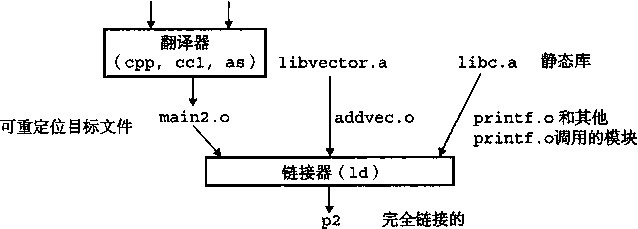
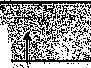
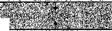

如果X有两个弱定义，也会发生相同的事情（规则3)：
卜 bar4.c 木 /
int x;
3
a void f()
{
x = 15212;
/* foo4.c */
#include <stdio.h>
void f(void);
4
int x;
.6
int main()
B {
x = 15213;
f 0 ;
printf ("x = 7od\n" , x)
return 0;
}
规则2和规则3的应用会造成一些不易察觉的运行时错误 ， 对于不警惕的程序员来说，这是 很难理解的，尤其当如果重复的符号定义还有不同的类型时。考虑下面这个例子，其中x在一 个模块中定义为int,而在另一个模块中定义为double ：
/* foo5.c */ i /* bar5.c 来 /
#include <stdio.h> 2 double x;
void f (void) ; 3 、
4 void f()
int x = 15213; 5 {
int y = 15212; 6 x = -0.0;
7 >
int mainO
{
f 0;
printf ("x = 0x%x y = 0x%x \n",
x, y);
return 0;
>
在一台IA32/Linux机器上 ， double类型是8个字节 ， 而int类型是4个字节。因此， bar5 . c的第6行中的赋值x=-0 • 0将用负零的双精度浮点表示覆盖存储器中x和y的位置 (foo5.c中的第5行和第6行）！
linux> gcc -o foobar5 foo §.c bar5.c linux> ./foobar5 x = 0x0 y = 0x80000000
这是一个细微而令人讨厌的错误，尤其是因为它是默默发生的，编译系统不会给出警告，而 且因为通常要在程序执行很久以后才表现出来，且远离错误的发生.地。在一个拥有几百个模块的 大型系统中，这种类型的错误相当难以修正，尤其因为许多程序员并不知道链接器是如何工作 的。.当你怀疑有此类错误时，用像GCC-fno-common这样的选项调用链接器，这个选项会告 诉链接器，在遇到多重定义的全局符号时，输出一条警告信息。
® 练习题 7.2在此题中， REF(x.i>-->DEF(x.lO 表示链接器将把模块 i 中对符号 x 的任意引用与模 块k中x的定义联系起来。对于下面的每个示例，用这杯表示法来说明链接器将如何解析每个模块中 对多重定义符号的引用。如果有一个链接时错误（规则1),写“ERROR”。如果链接器从定义中任意 选择一个（规则3),则写“UNKNOWN”。
A. /* Module 1 */ /* Module 2 */
int mainO int main;
{ int p2()
{
}
REF (main. 1) —> DEF( )
REF (main. 2) —> DEF( .—)
B.
/* Module 1 */ /* Module 2 */
void mainO int main=l;
{ int p2()
>
REF (main. 1) ~> DEF ( • )
REF (main. 2) —> DEF( .一 _)
C. /* Module 1 */ /* Module 2 */
int x; double x=l.0;
void mainO int p2()
{ {
. >
REF(x.l) —>DEF( •—)
REF(x.2) —> DEF(..„ „•. •)
7.6.2与静态库链接
迄今为止，我们都是假设链接器读取一组可重定位自标文件 ， 并把它们链接起来，成为一个 输出的可执行文件。实际上 ， 所有的编译系统都提供一种机制，将所有相关的目标模块打包成为 一个单独的文件，称为 静态库 （static library),它可以用做链接器的输入。当链接器构造一个输 出的可执行文件时，它只拷贝静态库里被应用程序引用的目标模块。
为什么系统要支持库的概念呢？以ANSI C为例，它定义了一组广泛的标准I/O、字符串操 作和整数数学函数，例如atoi、printf、scanf、strcpy和rand。它们在libc.a库中， 对每个C程序来说都是可用的。ANSI C还在libm.a库中定义了一组广泛的浮点数学函数，如 sin、cos 和 sqrto
让我们来看看如果不使用静态库，编译器开发人员会使用什么方法来向用户提供这些函数。 一种方法是让编译器辨认出对标准函数的调用，并直接生成相应的代码。Pascal (只提供了一小 部分标准函数）釆用的就是这种方法 ， 但是这•种方法对C而言是不合适的，因为C标准定义了 大量的标准函数。这种方法将给编译器增加显著的复杂性，而且每次添加、删除或修改一个标准
函数时，就需要一个新的编译器版本。然而，对于应用程序员而言 ， 这种方法会是非常方便的， 因为标准函数将总是可用的。
另一种方法是将所有的标准C函数都放在一个单独的可重定位目标模块中（如libc.o 中)，应用程序员可以把这个模块链接到他们的可执行文件中：
unix> gcc main.c /usr/1 ib/1 ibc.o
这种方法的优点是它将编译器的实现与标准函数的实现分离开来，并且仍然对程序员保持适 度的便利。然而，一个很大的缺点是系统中每个可执行文件现在都包含着一份标准函数集合的完 全拷贝，这对磁盘空间是很大的浪费。（在一个典型的系统上，libc.a大约是8MB,而libm. a大约是1MB。）更糟糕的是，每个正在运行的程序都将它自己的这些函数的拷贝放在存储器 中，这又是极度浪费存储器的。另一个大的缺点是，对任何标准函数的任何改变，无论多么小的 改变，都要求库的开发人员重新编译整个源文件 ， 这是一个非常耗时的操作，使得标准函数的开 发和维护变得很复杂。
我们可以通过为每个标准函数创建一个独立的可重定位文件，把它们存放在一个为大家都知 道的目录中来解决其中的一些问题。然而，这种方法要求应用程序员显式地链接合适的目标樓块 到它们的可执行文件中，这是一个容易出错而且耗时的过程：
unix> gcc main.c /usr/lib/printf.o /usr/lib/scanf.o ...
静态库概念被提出来 ， 以解决这些不同方法的缺点。相关的函数可以被编译为独立的目标模 块，然后封装成一个单独的静态库文件。然后，应用程序可以通过在命令行上指定单独的文件名 字来使用这些在库中定义的函数。比如，使用标准C库和数学库中函数的程序可以用形式如下 的命令行来编译和链接：
unix> gcc main.c /usr/1 ib/1 ibm.a /usr/lib/libc .a
在链接时，链接器将只拷贝被程序引用的目标模块，这就减少了可执行文件在磁盘和存储器 中的大小。另一方面，应用程序员只需要包含较少的库文件的名字（实际上，C编译器驱动程序 总是传送libc. a给链接器，所以前面提到的对libc • a的引用是不必要的)。
在Unix系统中 ， 静态库以一种称 为存档 （archive)的特殊文件格式存放在磁盘中。存档文 件是一组连接起来的可重定位目标文件的集合 ， 有一个头部用来描述每 个成员 目标文件的大小和 位置。存档文件名由后缀.a标识。为了使我们对库的讨论更加形象具体，假设我们想在一个叫 做libvector . a的静态库中提供图7-5中的向量例程。
■ code/link/addvec. c
.code/link/multvec. c
void addvec(int *x, int *y, int *z, int n)
int i;
for (i = 0; i < n; i ++).> z[i] = x[i] + y[i];
void multvec(int 木x, int *y, int *z, int n)
int i;
for (i = 0; i < n; i++) z[i] = x[i] * y[i];
code/link/multvec. c
■ code/link/addvec. c
a) addvec.
b) multvec.o
图 7-5 libvector.
中的成员目标文件
为了创建该库，我们将使用AR工具，具体如下：
unix> gcc -c addvec.c multvec.c
unix> ar res libvector.a addvec.o multvec.o
为了使用这个库，我们可以编写一个应用，比如图7-6中的main2.c,它调用addvec库 例程。（包含（头）文件vector .h定义了 libvector.a中例程的函数原型)。
code/link/main2. c
1
2
3
A
5
6
7
9 0 1 2
3
4
/* main2.c */
#include <stdio.h>
#include "vector.h"
int x[2] = -Cl, 2>; int y[2] = {3, 4}; int z [2];
int mainO
addvec(x, y, z, 2); printf("z = [%d %d]\n", z[0], z[1]); return 0;
>
； ： code/link/main2. c
图7-6示例程序2 ：这个程序调用了静态libvector.a库中的成员函数 为了创建这个可执行文件，我们要编译和链接输入文件main • o和libvector • a ：
unix> gcc -02 -c main2 . c
unix> gcc -static -o p2 main2.o ./libvector.a
图7-7概括了链接器的行为。-static参数告诉编译器驱动程序，链接器应该构建一个完 全链接的可执行目标文件，它可以加载到存储器并运行 ， 在加载时无需更进一步的链接。当链接 器运行时，它判定addvec.o定义的addvec符号是被main.o引用的 ， 所以它拷贝addvec. o到可执行文件。因为程序不引用任何由multvec.o定义的符号，所以链接器就不会拷贝这个 模块到可执行文件。链接器还会拷贝libc. a中的printf .o模块，以及许多C运行时系统中 的其他模块。
源文件 main2 . c vector. h

可执行目标文件 图7-7与静态库链接
7.6.3链接器如何使用静态库来解析引用
虽然静态库是很有用而且重要的工具，但是它们同时也是程序员迷惑的源头，因为Unix链 接器使用它们解析外部引用的方式是令人困惑的。在符号解析的阶段，链接器从左到右按照它们 在编译器驱动程序命令行上出现的相同顺序来扫描可重定位目标文件和存档文件。（驱动程序自 动将命令行中所有的.c文件翻译为.o文件。）在这次扫描中，链接器维持一个可重定位目标文 件的集合五（这个集合中的文件会被合并起来形成可执行文件>,一个未解析的符号（即引用了 但是尚未定义的符号） 集合U， 以及一个在前面输入文件中已定义的符号集合D。初始时， E、 ¢/和乃都是空的。
•对于命令行上的每个输入文件/,链接器会判断/是一个目标文件还是一个存档文件。如 果/是一个目标文件，那么链接器把/添加到凡修改y和D来反映/中的符号定义和引 用，并继续下一个输入文件。
•如果/是一个存档文件，那么链接器就尝试匹配C7中未解析的符号和由存档文件成员定义 的符号。如果某个存档文件成员m,定义了一个符号来解析C/中的一个引用，那么就将m 加到E中，并且链接器修改C/和D来反映m中的符号定义和引用。对存档文件中所有的 成员目标文件都反复进行这个过程，直到和D都不再发生变化。在此时，任何不包含在 E 中的成员目标文件都简单地被丢弃 ， 而链接器将继续处理下一个输入文件。
•如果当链接器完成对命令行上输入文件的扫描后，C/是非空的，那么链接器就会输出一个 错误并终止。否则，它会合并和重定位五中的目标文件，从而构建输出的可执行文件。
不幸的是，这种算法会导致一些令人困扰的链接时错误，因为命令行上的库和目标文件的顺 序非常重要。在命令行中，如果定义一个符号的库出现在引用这个符号的目标文件之前，那么引 用就不能被解析，链接会失败。比如，考虑下面的命令行发生了什么：
unix> gcc -static ./libvector.a main2 .c /tmp/cc9XH6Rp.o: In function ^ain':
/tmp/cc9XH6Rp.o(.text+0x18): undefined reference to f addvec'
在处理libvector.a时，（7是空的，所以没有libvector • a中的成员目标文件会添加 到£中。因此，对addvec的弓丨用是绝不会被解析的 ， 所以链接器会产生一条错误信息并终止。
关于库的一般准则是将它们放在命令行的结尾。如果各个库的成员是相互独立的（也就是 说没有成员引角另一个成员定义的符号)，那么这些库就可以按照任何顺序放置在命令行的结 尾处。
另一方面，如果库不是相互独立的，那么它们必须排序，使得对于每个被存档文件的成员外 部引用的符号s,在命令行中至少有一个s的定义是在对s的引用之后的。比如，假设foo.c 调用libx.a和libz.a中的函数，而这两个库又调用liby.a中的函数。那么 ， 在命令行中 libx.a和libz.a必须处在liby.a之前：
unix> gcc foo.c libx.a libz.a liby.a ..
如果需要满足依赖需求,可以在命令行上重复库。比如，假设foo.c调用libx.a中的函 数，该库又调用liby.a中的函数，而liby• a又调用libx• a中的函数。那么libx.a必须 在命令行上重复出现：
unix> gcc foo.c libx.a liby.a libx.a
作为另一种方法，我们可以将libx.a和liby.a合并成一个单独的存档文件。
®练习题7.3 a和b表示当前目录中的目标模块或者静态库，而a —b表示a依赖于b,也就是说b
定义了一个被a引用的符号。对于下面每种场景，请给出最小的命令行（也就是一个含有最少数量的 目标文件和库参数的命令)，使得静态链接器能解析所有的符号引用。
p.o -> libx.a.
p.o libx.a — liby.a.
p.o libx.a-^- liby.a JLliby.alibx.a-^p.o.
. . _ - * . , ■ ■
7.7 重定位
., . . ., i . . . . / ■；
一旦链接器完成了符号解析这一步 ， 它就把代码中的每个符号引用和确定的一个符号定义 (即它的一个输入目标模块中的一个符号表条目）联系起来。在此时 ， 链接器就知道它的输人目 标模块中的代码节和数据节的确切大小。现在就可以开始重定位了，在这个步骤中 ， 将合并输入 模块，并为每个符号分配运行时地址。重定位由两步组成：
•重 定位节和符号定义。 在这一步中，链接器将所有相同类型的节合并为同一类型的新的聚 合节。例如，来自输人模块的.data节被全部合并成一个节，这个节成为输出的可执行 目标文件的.data节。然后，链接器将运行时存储器地址赋给新的聚合节，赋给输入模 块定义的每个节，以及赋给输入模块定义的每个符号。当这一步完成时，程序中的每个指 令和全局变量都有唯一的运行时存储器地址了。
• 重定位节中的符号引用。 在这一步中，链接器修改代码节和数据节中对每个符号的引 用，使得它们指向正确的运行时地址。为了执行这一步，链接器依赖于称 为重定位条目 (relocation entry)的可重定位目标模块中的数据结构 ， 我们接下来将会描述这种数据结构。
重定位条目
当汇编器生成一个目标模块时，它并不知道数据和代码最终将存放在存储器中的什么位置。 它也不知道这个模块引用的任何外部定义的函数或者全局变量的位置。所以，无论何时汇编器遇 到对最终位置未知的目标引用，它就会生成一个 重定位条目， 告诉链接器在将目标文件合并成可 执行文件时如何修改这个引用。代码的重定位条目放在.rel.text中。已初始化#f的重定位 条目放在.rel.data中。
图7-8展示了 ELF重定位条目的格式。offset是需宴被修改的引用的节偏移。symbol标 识被修改的引用应该指向的符号。type告知链接器如何修改新的引用。
code/link/elf structs. c
typedef struct {.
int offset; /* Offset of the Reference to relocate */
int symbol:24, /* Symbol the reference should point to 氺 /
type:8; ' /* Relocation type 本 /
} Elf32«Rel;
： ； ： ；~— code/link/elf structs, c
图7-8 ELF重定位条目。每个条且表示一个必须被重定位的引用
ELF定义了 11种不同的重定位类型 ， 有些相当隐秘。我们只关心其中两种最基本的重定位 类型：
•R_386—PC32 :重定位一个使用32位PC相对地址的引用。回顾一下3.6.3节，一个PC相 Xf地址^是距程序计数器(PC)的当前运行时值的偏移量。 , 当CPU执行一条使用PC相对 寻址的指令时 ， 它就将在指令中编码的32位值上加上PC的当前运行时值， 得到有效地址 (如call指令的目标)，PC值通常是存储器中下一条指令的地址。 •R一386_32:重定位一个使用32位绝对地址的引用。通过绝对寻址 ， CPU直接使用在指 i中编i的32位值作为有效地址，不需要进一步修改。
7.7.2重定位符号引用
图 1-9 展示了链接器的重定位算法的伪代码。第1行和第2行在每个节 s 以及与每个节相 关联的重定位条目r上迭代执行。为了使描述具体化，假设每个节s是一个字节数组，每个重 定位条目r是一个类型为Elf32_Rel的结构，如图7-8中的定义。另外，还假设当算法运行 时，链接器已经为每个节（用ADDR(s)表示）和每个符号都选择了运行时地址（用ADDR(r. symbol)表示)。第3行计算的是需要被重定位的4字节引用的数组s中的地址。如果这个引 用使用的是PC相对寻址，那么它就用第5〜9行来重定位。如果该引用使用的是绝对寻址，它 就通过第11〜13行来重定位。
foreach section s {
foreach relocation entry r {
refptr = s + r.offset; /* ptr to reference to be relocated */
4
/* Relocate a PC-relative reference */
if (r.type == R_386JPC32) {
refaddr = ADDR(s) + r .offset ; /* ref's run-time address */
*refptr = (unsigned) (ADDR(r.symbol) + *refptr - refaddr);
>
0
/* Relocate an absolute reference */
if (r.type == R_386_32)
*refptr = (unsigned) (ADDR(r.symbol) + *refptr);
}
>
图7-9重定位算法
重定位PC相对引用
回想我们在图7-la中的运行示例 ， main, o的 • text节中的main程序调用swap程序, 该程序是在swap.o中定义的。下面是call指令的反汇编列表，是由GNU OBJDUMP工具生 成的：
6: e8 fc ff ff ff call 7 <main+0x7> swapO ；
7: R_386_PC32 swap relocation entry
从这个列表中，我们看到call指令开始于节偏移0x6处，由1个字节的操作码0xe8和 随后的32位引用Oxfffffffc (十进制-4)组成，它是以小端法字节顺序存储的。我们还看到 下一行显示的是这个引用的重定位条目。（回想一下，重定位条目和指令实际上是存放在目标文 件的不同节中的。OBJDUMP工具为了方便将它们显示在一起。）重定位条目r由3个字段组成：
r.offset = 0x7
r. symbol = swap
r.type = R_386_PC32
这些字段告诉链接器修改开始于偏移量0x7.处的32位PC相对引用，使得在运行时它指向 swap程序。现在，假设链接器已经确定：
ADDR(s) = ADDR(.text) = 0x80483b4
和
ADDR(r.symbol) = ADDR(swap) = 0x80483c8
使用图7-9中的算法，链接器首先计算出引用的运行时地址（第7行）：
refaddr = ADDR(s) + r.offset =0x80483b4 + 0x7 =0x80483bb
然后，它将引用从当前值（-4)修改为0x9,使得它在运行时指向swap程序（第8行）：
♦refptr = (unsigned) (ADDR(r.symbol) + *refptr - refaddr)
=( 皿 signed) (0x80483c8 十 (-4) - 0x80483bb)
=(unsigned) (0x9)
在得到的可执行目标文件中，call指令有如下的重定位的形式：
80483ba: e8 09 00 00 00 call 80483c8 <swap> suapO ；
在运行时，call指令将存放在地址0x80483ba处。当CPU执行call指令时 ， PC的值 为0x80483bf,即紧随在call指令之后的指令的地址。为了执行这条指令，CPU执行以下的 步骤：
push PC onto stack
PC <- PC + 0x9 = 0x80483bf + 0x9 = 0x80483c8
因此，要执行的下一条指令就是swap程序的第一条指令，这当然就是我们想要的！
你可能想知道为什么汇编器会将call指令中的引用的初始值设置为-4。汇编器用这个值 作为偏移量，是因为PC总是指向当前指令的下一条指令。在有不同指令大小和编码方式的不同 的机器上，该机器的汇编器会使用不同的偏移量。这是一个很有用的技巧，它允许链接器透明地 重定位引用，很幸运地不用知道某一台机器的指令编码。
重定位绝对引用
回想图7-1中我们的示例程序，swap, o模块将全局指针bufpO初始化为指向全局数组 buf的第一个元素的地址：
int *bufp0 = &buf[0];
因为bufpO是一个已初始化的数据目标 ， 那么它将被存放在可重定位目标模块swap.o 的.data节中。因为它被初始化为一个全局数组的地址，所以它需要被重定位。下面是swap,
o中• data节的反汇编列表：
<bufp0>:
: 00 00 00 00 int *bu£p0 --- &bul[0] ;
0: R_386_32 buf Relocation entry
我们看到.data节包含一个32位引用 ， bufpO指针的值为0x0。重定位条目告诉链接器 这是一个32位绝对引用，开始于偏移0处，必须重定位使得它指向符号buf。现在，假设链接 器已经确定：
ADDR(r.symbol) = ADDR(buf) = 0x8049454
链接器使用图7-9中算法的第13行修改了引用 ：
♦refptr = (unsigned) (ADDR(r.symbol) + 3 refptr)
=(unsigned) (0x8049454 + 0)
=(unsigned) (0x8049454)
在得到的可执行目标文件中，引用有下面的重定位形式：
0804945c <bufp0>:
804945c: 54 94 04 08 Relocated!
总而言之，链接器决定在运行时变量 bufpO 将放置在存储器地址 0x804945c 处，并且被初始 化为 0x8049454, 这个值就是 buf 数组的运行时地址。
swap.o模块中的.text节包含5个绝对引用，都以相似的方式进行重定位（参考练习题 7.12)。图7-10展示了最终的可执行目标文件中被重定位的.text和.data节。
|
1 |
080483b4 |
<main>: |
||||
|
2 |
80483b4 |
55 |
||||
|
3 |
80483b5 |
89 |
e5 |
|||
|
4 |
80483b7 |
83 |
ec |
08 |
||
|
5 |
80483ba |
e8 |
09 |
00 |
00 |
00 |
|
6 |
80483bf |
31 |
cO |
|||
|
7 |
80483cl |
89 |
ec |
|||
|
8 |
80483c3 |
5d |
||||
|
9 |
80483c4 |
c3 |
||||
|
10 |
80483c5 |
90 |
||||
|
11 |
80483c6 |
90 |
||||
|
12 |
80483C7 |
90 |
||||
|
13 |
080483c8 |
<swap>: |
||||
|
14 |
80483c8 |
55 |
||||
|
15 |
80483c9 |
8b |
15 |
5c |
94 |
04 |
|
16 |
80483cf |
al |
58 |
94 |
04 |
08 |
|
17 |
80483d4 |
89 |
e5 |
|||
|
18 |
80483d6 |
c7 |
05 |
48 |
95 |
04 |
|
19 |
80483dd |
94 |
04 |
08 |
||
|
20 |
80483e0 |
89 |
ec |
|||
|
21 |
80483e2 |
8b |
0a |
|||
|
22 |
80483e4 |
89 |
02 |
|||
|
23 |
80483e6 |
al |
48 |
95 |
04 |
08 |
|
24 |
80483eb |
89 |
08 |
|||
|
25 |
80483ed |
5d |
||||
|
26 |
80483ee |
c3 |
||||
push
mov
sub
call
xor
mov •
pop
ret
nop
nop
nop
push
mov
mov
mov
movl
mov mov mov mov mov. pop ret
%ebp
%esp,%ebp
$0x8, o /oesp
80483c8 <swap> swapO ；
7 0 eax,%eax
7 0 ebp,%esp
7«ebp
%ebp，
0x804945c, %edx Get *bu±pO •
0x8049458,%eax Get buf[l]
%esp,%ebp
$0x8049458, 0x8049548 bufpl = &buf[l]
°/ 0 ebp,%esp (%edx),%ecx %eax,(%edx)
0x8049548,%eax Get *bu.fpl
%ecx,(%eax)
%ebp .
已重定位的 .text 节
code/link/pdata~exe. d
|
1 |
08049454 <buf>: |
i J |
||
|
2 |
8049454: 01 00 |
00 |
00 02 00 00 00 |
|
|
3 |
0804945c <bufp0>: |
|||
|
A |
804945c: 54 94 |
04 |
08 |
Relocated! |
code/link/pdata-exe. d
b)已重定位的.data节 图7-10可执行文件p的已重定位的• text和• data节。原始的C代码在图7-1中
®练习题 7.4本题是关于图7-10中的重定位程序的。
第5行中对swap的重定位引用的十六进制地址是多少？
第5行中对swap的重定位引用的十六进制值是多少？
假设因为某种原因，链接器决定将.text节放在0x80483b8处而不是0x80483b4处。那么在 这种情况下，第5行的重定位引用的十六进制值是多少？
參
7.8 可执行目标文件
我们已经看到链接器是如何将多个目标橾块合并成一个可执行目标文件的。我们的c程序， 开始时是一组ascii文本文件，已经被转化为一个二进制文件，且这个二进制文件包含加载程序 到存储器并运行它所需的所有信息。图7-11概括了一个典型的ELF可执行文件中的各类信息。
ELF头部
段头部表
.init
只读存储器段（代码段）
text
•rodata
.data
.bss
读泻存储器段（数据段）
•symtab
• debug
.line
不加载到存储器的符号表 和调试信息
•strtab
节头表
描述目标/ 文件节• I
图7-11典型的ELF可执行目标文件
可执行目标文件的格式类似于可重定位目标文件的格式。ELF头部描述文件的总体格式。它 还包括程序的入口点（entrypoint),也就是当程序运行时要执行的第一条指令的地址。 .text 、
rodata 和 .data 节和可重定位目标文件中的节是相似的，除了这些节已经被重定位到它们最 终的运行时存储器地址以外。 .init 节定义了一个小函数，叫做一 init, 程序的初始化代码会 调用它。因为可执行文件是完全链接的（已被重定位了），所以它未再需要.rel节。
ELF可执行文件被设计得很容易加载到存储器，可执行文件的连续的片（chunk)被映射到 连续的存储器段。段头部表（segment header table)描述了这种映射关系。图7-12展示了可执行 文件P的段头部表，是由OBJDUMP显示的。
code/link/p-exe. d
Read-only code segment
LOAD off 0x00000000 vaddr 0x08048000 paddr 0x08048000 align 2 4 12
filesz 0x00000448 memsz 0x00000448 flags r-x
Read/write data segment
LOAD off 0x00000448 vaddr 0x08049448 paddr 0x08049448 align 2**12
filesz 0x000000e8 memsz 0x00000104 flags rw-
目标文件中的段大小
从段头部表中，我们会看到根据可执行目标文件的内容初始化两个存储器段。第1行和第2 行告诉我们第一个段（代码段）对齐到一个4KB (2 12 )的边界，有读/执行许可，开始于存储器 地址0x08048000处，总共的存储器大小是0x448字节，并且被初始化为可执行目标文件的头 0x448个字节，其中包括ELF头部、段头部表以及.init、• text和• rodata节。
第3行和行告诉我们第二个段（数据段）被对齐到一个4KB的边界，有读/写许可， 开始于存储器述址0x08049448处，总的存储器大小为0x104字节，并用从文件偏移0x448 处开始的0xe8个字节初始化，在这种情况下，偏移0x448处正是.data节的开始。该段中剩 下的字节对应于运行时将被初始化为零的.bss数据。
7.9 加载可执行目标文件
要运行可执行目标文件P,可以在Unix外壳的命令行中输入它的名字： unix> ./p
因为P不是一个内置的外壳命令，所以外壳会认为P是一个可执行目标文件，通过调用某个驻 留在存储器中称为加载器（loader)的操作系统代码来运行它。任何Unix程序都可以通过调 用execve函数来调用加载器，我们将在8.4.5节中详细地描述这个函数。加载器将可执行目标 文件中的代码和数据从磁盘拷贝到存储器中，然后通过跳转到程序的第一条指令或入口点（entry point)来运行该程序。这个将程序拷贝到存储器并运行的过程叫做加载（loading)。
每个Unix程序都有一个运行时存储器映像，类似于图7-13中所示的那样。在32位Linux 系统中，代码段总是从地址0x08048000处开始。数据段是在接下来的下一个4KB对齐的地址 处。运行时堆在读/写段之后接下来的第一个4KB对齐的地址处，并通过调用malloc库往上 增长。（我们将在9.9节中详细描述malloc和堆。）还有一个段是为共享库保留的。用户栈总是 从最大的合法用户地址开始，向下增长的（向低存储器地址方向增长)。从栈的上部开始的段是 为操作系统驻留存储器的部分（也就是内核）的代码和数据保留的。
当加载器运行时，它创建如图7-13所示的存储器映像。在可执行文件中段头部表的指导下, 加载器将可执行文件的相关内容拷
f对用户托码不可 I见的存储器
图7-13 Linux运行时存储器映像
0x08048000
X ‘ init • .：iodatal)
从可执行文件中加载
读焊段 ' C.datmi .'We) 、
-brk
_讓

(由 maUocftl 建）
4esp (栈指针）
用練
(mmm
m

贝到代码和数据段。接下来，加载 器跳转到程序的入口点，也就是符 号_start的地址。在一start地 址处的启动代码（startup code)是在 目标文件ctrl.o中定义的，对所 有的C程序都是一样的。图7-14展 示了启动代码中具体的调用序列。在 从• text和• init节中调用了初 始化例程后，启动代码调用atexit 例程，这个程序附加了一系列在应 用程序正常中止时应该调用的程序。 exit函数运行atexit注册的函 数，然后通过调用_exit将控制返 回给操作系统。接启动代码调用 应用程序的main程序，它会开始执 行我们的C代码。在应用程序返回
之后，启动代码调用_exit程序，它将控制返回给操作系统。
1 |
0x080480c0 <_start> : |
/* Entry point in.. |
text 氺/ |
2 |
call —libc_init_first |
/* Startup code in |
.text */ |
3 |
call _init |
/* Startup code in |
.init */ |
4 |
call atexit |
/* Startup code in |
.text */ |
5 |
call main |
/* Application main routine */ |
|
6 |
call _exit |
/* Returns control |
•to OS */ |
7 |
/* Control never reaches here */ |
||
图 7 _14每个C程序中启动例程crtl.o的伪代码 注：没有显示将每个函数的参数压入栈中的代码
加载器实际上是如何工作的？
我们对于加载的描述从概念上来说是准确的，但也不完全准确。为了理解加载实际上是如何工 作的，你必须理解进程、虚拟存储器和存储器映射的概念，这些我们还没有加以讨论。在后面的第 8 章和第 9 章中遇到这些概念时，我们将重新回到加载的问题上，并逐渐向你揭开它的神秘面纱。
对于不够有耐心的读者，下面是关于加载实际上是如何工作的一个概述： Unix 系统中的每 个程序都运行在一个进程上下文中，有自己的虚拟地址空间。当外壳运行一个程序时，父外壳进 程生成一个子进程，它是父进程的一个复制品。子进程通过 execve 系统调用启动加载器。加 载器删除子进程现有的虚拟存储器段，并创建一组新的代码、数据、堆和栈新的栈和堆段被 初始化为零。通过将虚拟地址空间中的页映射到可执行文件的页大小的片（ clrnnk ),新的代码和 数据段被初始化为可执行文件的内容。最后，加载器跳转到 —start 地址，它最终会调用应用 程序的 main 函数。除了一些头部信息，在加载过程中没有任何从磁盘到存储器的数据拷贝。直 到 CPU 引用一个被映射的虚拟页才会进行拷贝，此时，操作系统利用它的页面调度机制自动将 页面从磁盘传送到存储器。
_练习题 7.5 A. 为什么每个 C 程序都需要一个叫做 main 的函数？
你想过为什么 C 的 main 函数可以通过调用 exit 或者执行一条 return 语句来结束，或者两者都 不做，而程序仍然可以正确终止吗？请解释。
7.10 动态链接共享库
我们在 7.6.2 节中研究的静态库解决了许多关于如何让大量相关函数对应用程序可用的问题。 然而，静态库仍然有一些明显的缺点。静态库和所有的软件一样，需要定期维护和更新。如果应 用程序员想要使用一个库的最新版本，他们必须以某种方式了解到该库的更新情况，然后显式地 将他们的程序与更新了的库重新链接。
另一个问题是几乎每个 C 程序都使用标准 I/O 函数，如 printf 和 scanf 。在运行时，这 些函数的代码会被复制到每个运行进程的文本段中。在一个运行 50 〜 100 个进程的典型系统上， 这将是对稀缺的存储器系统资源的极大浪费。（存储器的一个有趣属性就是不论系统中有多大的 存储器，它总是一种稀缺资源。磁盘空间和厨房的垃圾桶同样有这种属性。）
共享库 （shared library) 是致力于解决静态库缺陷的一个现代创新产物。共享库是一个目标模 块，在运行时，可以加载到任意的存储器地址，并和一个在存储器中的程序链接起来。这个过程 称为动态链接 (dynamiclinking), 是由一个叫做动态链接器（ dynamiclinker) 的程序来执行的。
共享库也称为共 享目标 （shared object), 在 Unix 系统中通常用 .so 后缀来表示。微软的操 作系统大量地利用了共享库，它们称为 DLL ( 动态链接库)。